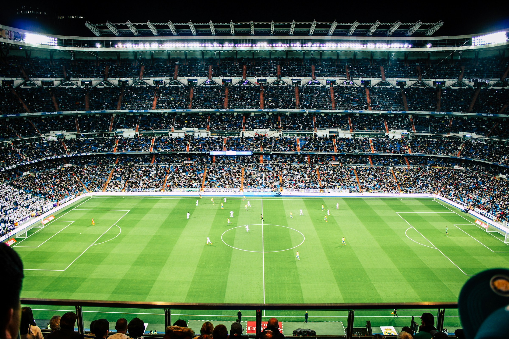

WEEKEND REVIEW: WHAT WE LEARNED
Home advantage for Sporting M.C. wasnt enought to overcome bitter rivals Sporting Lisbon. In a hard fought derby game it ended level after 90 minutes. Sporting M.C. led for most of the game until a 73rd minute equaliser for Sporting Lisbon. A red card for Marcelious in the 68th minute gave Sporting Lisbon the edge. Two points still seperate the league leaders Sporting Lisbon from Sporting M.C.
Further down the league table Sporting Braga gave Chaves another blow in their fight for relegation beating them 3 nil. Porto and Benfica went toe to toe for 90 minutes only to be seperated by a last gasp header from Pepe gave FC Porto the advantage. It ended 1-0 after 90 minutes.
MARCELIOUS TO DEPART SPORTING M.C. AT THE END OF THE SEASON
After 15 years at the club Marcelious decides to hang up his boots at the end of the season. The club captain leaves a lustrious career winning 2x UCL finals, 4x Primeira Liga titles, 2X Golden Boot winner and 5x LPFP Primeira Liga Player Of the Year.
"WE DONT CELEBRATE VICTORIES AT THIS CLUB, WE CELEBRATE TITLES"
Sporting M.C. head coach João Benito was quoted after their hard fought 3-2 victory over Sporting Braga last weekend. The quote comes at the business end of the season which still sees Sporting M.C. 2 points off league leaders Sporting Lisbon.
"ITS A FIGHT WEEK IN AND WEEK OUT FOR A STARTING JERSEY"
"Every player at training is fighting for a starting position every week. It makes us all better as players" Sporting M.C. club captain Marcelious has said.